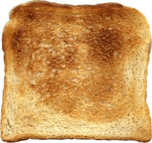

Today's Chuckle

From the Milwaukee Sentinel
"Modern gadgets are wonderful.
In the old days we were always having to pry the burned toast out of the toaster. Now the burned toast pops up automatically."
Todays chuckle.(1981. September 22).
The Milkwaukee Sentinel,pp. A1. Retrived from: https://news.google.com/newspaper?id=UNQVAAAAIBAJ&sjid=FhiEAAAAIBAJ&pg=916% 2C3946249